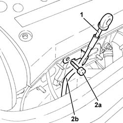
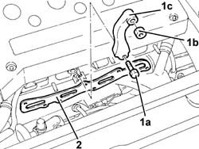

1072C13 EXHAUST MANIFOLD GASKET - REPLACE
- Path
- Procedures > 10 ENGINE UNIT > 1072 INLET AND EXHAUST MANIFOLDS > 1072C EXHAUST MANIFOLDS > 1072C13 EXHAUST MANIFOLD GASKET - REPLACE
- Kind
- repair procedure (removal / refitting; the operation number is the code)
- Applies to
- engines: 1.8 T.SPARK; all production periods
- Interactive page
- https://sloeber94.github.io/elrnDB-aGt/en/#/125001083
Applies to: engines: 1.8 T.SPARK; all production periods
 Removing
Removing
 Refitting
RefittingPosition the vehicle on the ramp.
Ensure that the ignition key is in the OFF postition, then disconnect the battery negative terminal.
Name | Connector | |
|---|---|---|
- | Battery | See A1B BATTERY ( CONNECTORS ) |
Proceed with the removal
Op. 1072C44 EXHAUST MANIFOLD HEAT SHIELD ON BULKHEAD - R+R
.
Proceed with the removal
Op. 1080B40 CATALYTIC PRE-CONVERTER - R R
.
Proceed with the removal
Op. 1072C12 EXHAUST MANIFOLD - R R.
1. Release and remove the engine oil dipstick.
2. Undo the nut (2a) and remove the engine oil dipstick pipe (2b).

Applies to: engines: 1.8 T.SPARK; all production periods
1. Undo the bolt (1a) and the nut (1b) and remove the wter pump rigid inlet pipe mounting bracket (1c).
2. Remove the exhaust manifold gasket.

Applies to: engines: 1.8 T.SPARK; all production periods
Refitting
RemovingPlace a new exhaust manifold gasket in the housing.
Place the bracket fastening the water pump rigid coolant inlet pipe back in its housing and fasten it using the nut and the bolt.
Place the complete engine oil dipstick tube back in its housing and fix it using the bolt.
Place the engine oil dipstick back in its seating.
Proceed with the refitting
Op. 1072C12 EXHAUST MANIFOLD - R R.
Proceed with the refitting
Op. 1080B40 CATALYTIC PRE-CONVERTER - R R
.
Proceed with the refitting
Op. 1072C44 EXHAUST MANIFOLD HEAT SHIELD ON BULKHEAD - R+R
.
Connect the battery terminal (-).
Remove the car from the ramp.